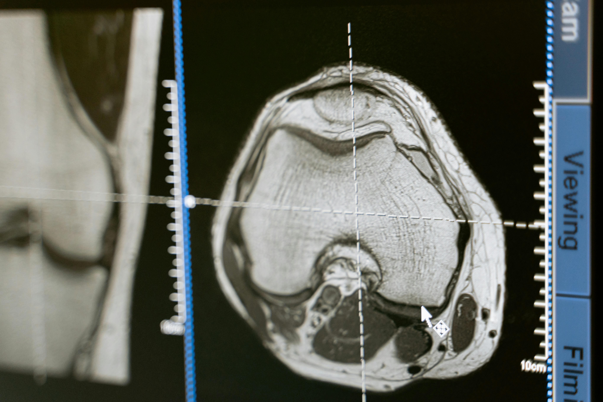

Your Brain
A Lazy
Couch Potato?
The 10% myth is attractive…
It opens up a world of unknown possibilities…
Our brains are complex machines that require all parts to be in working order for typical healthy functioning.
What the rumor says
You've probably heard it: “Humans only use 10% of their brains.” Sounds dramatic, right? Like the other 90% is chilling on a hammock, sipping piña coladas, waiting for us to finally evolve. It's the kind of line that pops up in movies, motivational speeches, and your friend's “deep” late-night chats.
“The 10% myth is attractive … it opens up a world of unknown possibilities … Our brains are complex machines that require all parts to be in working order for typical healthy functioning.”
You don't need 90% of unused brain space to be fascinating. The brain you already have is wild: about 86 billion neurons, constantly rewiring, adapting, and juggling tasks like a circus performer who never sleeps.
This magic is called neuroplasticity—your brain can reprogram itself, learn new skills, and build fresh pathways. Want to play guitar? Pick up Japanese? Finally understand taxes? Your brain can do that. No “hidden 90%” required.
Nobody's sure who started this nonsense. Maybe a 19th-century scientist said humans don't use their full potential, and the world heard, “Ah yes, 90% of the brain is just dead storage space.”
Cue decades of self-help gurus, cheesy posters, and Hollywood thrillers like Limitless, all telling us we could unlock superpowers if only we found the “ON” switch.
Because it's flattering. Imagine being told: “Hey, you're only using a tiny slice of your brilliance!” That feels way better than hearing: “You're at full power, and you just forgot your Netflix password again.”
Plus, it sells. Self-help books, supplements, and motivational speakers adore this myth. “Unlock your hidden 90%!” makes an amazing tagline. Too bad it's about as useful as buying a map of Atlantis.
You don't need 90% of unused brain space to be fascinating. The brain you already have is wild: about 86 billion neurons, constantly rewiring, adapting, and juggling tasks like a circus performer who never sleeps.
Your Brain
A Full-Time
WORKER
Not a Slacker
As Scientific American put it, “We use virtually every part of the brain, and most of the brain is active almost all the time.” Translation: your brain is not holding out on you. Even the act of you reading this sentence involves multiple regions firing in sync. If only 10% worked, you wouldn't be reading—you'd be drooling on the couch.
Clinical observations further refute the myth. If 90% of the brain were redundant, damage to large areas would have minimal behavioral consequences. In reality, even seemingly small brain injuries can result in profound cognitive, sensory, or emotional deficits. This indicates that nearly all regions play critical roles.
the truth is
cooler
So next time someone drops the 10% myth, you can smirk and say, “If that were true, I wouldn't even remember how to tie my shoes.”
The Punchline
Your brain is not a lazy roommate hogging the couch. It's an overachieving multitasker keeping you alive, dreaming up ideas, and maybe plotting what dessert you'll eat later. Forget unlocking a secret chamber of power—you're already using the deluxe, full-service model.